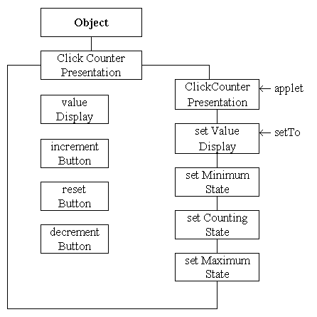

Click Counter Presentation
- Class Diagram

The instance needs to know the identity of its Applet,
upon construction, in order for it to be mounted within its display panel and
also to be able to dispatch events to it.
The three possible states of the interface can be set and controlled by
use of the three public actions. The value shown on the display is set
by the setValueDisplay() action.
The interface has no knowledge of its role as a counter. All it 'knows'
is how to set the text in the value display, how to set its button states
and where to send events when the user clicks one of the buttons.